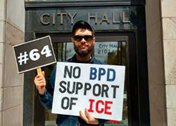
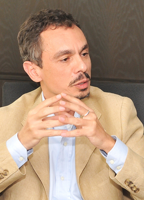
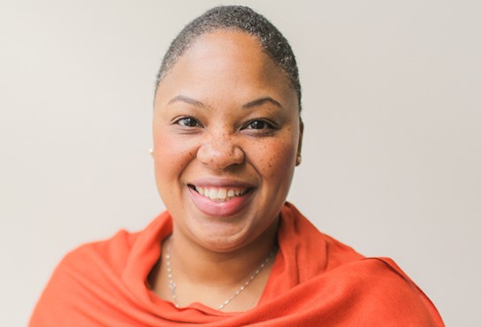

WWU Profiles
All the People Who Do This Work
There are many professors who teach at WWU who are working to engage students in social justice, who are engaging in social justice work because they feel they must, and who are simply living the work so fully that it touches everything they do. Many of these individuals are tasked heavily to do this work upholding the university's requirements of teaching, scholarship, and service in the course of their professional lives and while mentoring and advising students as well as colleagues.
We honor with warmth and gratitude all those who contributed to this project, those who could not catch their breath long enough to do so, and those who do not feel safe enough to be this public about what they do. We would also like to thank others in the Western community doing this challenging and important work.
Josh Cerretti
Department of History / Women, Gender, and Sexuality Studies
 Josh Cerretti teaches for social justice in honor of the insurgent movements of young people that brought the critical study of gender, race, and sexuality into the academy. Dr. Cerretti has always strived to be an activist-scholar, linking his organizing against state violence to his research on it, connecting his commitment to a curriculum that decenters whiteness to solidarity work with local communities of color, and turning his gratitude for public education into a staunch defense of public education for all. He brings the conflicts between historical injustices and the movements that confronted them to life in the classroom in order to give his students a usable past on which to build the future they seek to bring into being.
HIST/WGSS 368: Women of Color in the US (view syllabus)
- Introduces students to the interwoven histories of Indigenous, Black, Latina, and Asian-American women in the US.
- Highlights political organizing and successes of WOC-led movements over the past 150 years.
- Uses only texts authored by women of color in order to foreground their intellectual production over what has been written about them.
- Takes a critical perspective on the relationships between power, knowledge, and language, problematizing the relationship between researcher and researched.
- Foregrounds student voices with student-led facilitation sessions on readings relating to decolonization, queer of color critique, and transnational feminism.
- Pushes students to do research that is for and with marginalized communities as opposed to on or about them.
Brett Coleman
Department Human Services / Health & Community Studies
Brett Coleman challenges students in human services work where his scholarly interests in race, the non-profit industrial complex, and community-based interventions meet the classroom. He focuses on identifying people on the margins of society and centers their voices. He provides real life examples of social justice work through a focus on community organizing and in sharing his own experiences. Through challenging articles that reframe the human services sector, Dr. Coleman brings to light ideas that often do not get attention in other approaches to social work. Employing various strategies, Dr. Coleman:
- Encourages students to share perspectives, offering challenges but not answers
- Offers various world views to address issues
- Shares his experience with community organizing, providing context and complexity
- Tasks students with difficult readings, methods for processing them, and the challenge of presenting them to the class
- Empowers students to select relevant essay topics tied to frameworks, question their own motivations for wanting to help people, and examine the power dynamics that exist in any situation
HSP 402: Inequity in U.S. Policy and Institutions (view syllabus)
This course is built around the Systemic Racism Curriculum Project (SRCP), a participatory action research project meant to engage people in understanding and confronting racism as a systemic process. Through the lens of racism as the chief form of inequity built into the fabric of U.S. society, we will also examine other forms of inequity that intersect with racism through the policies and institutions that shape our society and culture. Currently, students are researching how white people develop an understanding of systemic racism, and developing curriculum based on the findings.
HSP 404: Human Service Professionals and Community Systems (view syllabus)
This class is based on a Participatory Action Research (PAR) model. PAR is based on the assumption that members of a community (that’s us) are quite knowledgeable about their problems and the solutions to those problems. Combining that community knowledge with “academic” or “expert” knowledge (e.g., theory and methodology) can empower the community to control its own destiny, particularly by amplifying the voices of its most disempowered community members. Currently, students are doing a research project meant to interrogate how the university responds to sexual assault.
Kate Darby
Department of Environmental Studies
Kate Darby brings a strong social justice orientation to environmental studies, recasting environmental issues as social and environmental justice issues. Dr. Darby has critically re-examined notions of nature, environmental knowledge, and the science of ecology through an inclusive approach. Dr. Darby facilitates community learning around environmental justice by hosting reading groups, supporting students in offering co-curricular environmental justice events, and moving forward a new Huxley minor in Environmental Justice.
ENVS 303: Human Ecology and Ethics (view syllabus)
- Introduces concepts of environmental ethics and justice by exploring diverse ways humans perceive and engage with their environment
- Helps students navigate and identify their own ethics and values, and introduces students (especially those coming to the class from environmental science) to the ways in which issues of power, privilege, and the environment interact.
- Critically examins what a "fair" or "just" situation is through an activity in which students distribute resources and hazards among their classmates (view EJ Activity 1 and EJ Activity 2)
- Explores the ways in which identity characteristics (including race, gender, and class) and systems of oppression impact how societies conceive of and address environmental challenges
- Examines the differential impacts of environmental harm on disadvantaged communities and begin to explore ways to ameliorate environmental (in)justice
- Employs students in a civic engagement, service, or advocacy project on an environmental (in)justice topic and type of action of their choosing
Hugo Garcia
Department of Modern and Classical Languages
Hugo Garcia arms students with tools that help them become informed citizens for the future. He links their academic education to current social struggles, transforming the classroom into a vibrant space for inclusion, acceptance, equity, and mutual understanding. He uses the classroom not only as a space for instruction but also for civil discussion and social justice. Dr. Garcia presents patterns and tendencies of oppression historically present in many different political conditions and encourages students to consider the significance of this in their lives.
SPAN 450 / WGSS 320: Queer Voices of Latin America Literature and Culture (view syllabus)
- Explores the multiplicity of identities in Latin America under the broad umbrella term "queer" represents
- Pushes students to understand the sturggle of queer voices through a historical and multinational perspective
- Challenges students to better understand their own socio-political environment in an interdisciplinary experience that includes literary pieces, film, dance, and fine arts, and breaks off in different historical and socio-political moments
Korry Harvey
Department of Communication Studies
Korry Harvey applies an innovative and inspiring social justice approach to his courses, teaching students how to advocate for those who do not have agency of their own and engage in dialogue with the campus community. Professor Harvey is a recipient of Western’s campus-wide Diversity Achievement Award and Phillip E. Sharpe Community Engagement Award, as well as the Scott Silver Teaching Award, the Washington Education Association’s Cultural Education Award, and a Whatcom Human Rights Award.
COMM 360: Communicating Masculinities
- Encourages students to consider the relationships between communication practices and gender roles in the United States
- Examines how communication constructs masculinities
- Focuses on how media, language, and rhetorical strategies construct dominant masculinities in contrast with other expressions
Marco Hatch
Department of Environmental Sciences
Marco Hatch is an accomplished scholar and social justice advocate for Native American students, providing Native communities' youth greater access to STEM opportunities while respecting coast Salish tribal people, landscapes, and seascapes. Dr. Hatch's work includes helping Native American students make the transition to graduate school in the geosciences, specifically connecting Northwest Indian College students to Western’s Huxley College of the Environment. His work focuses on a partnership between NWIC and Western called Partnerships in Geoscience Education, funded by a five-year $1.65 million National Science Foundation grant. This partnership also provides funding for NWIC graduates to pursue a master’s degree in Environmental Science.
Dr. Hatch’s research and teaching focuses on a developmental model called the Coastal Almanac that will put in place a structure for Pacific Northwest coastal communities and tribal nations to collect, analyze, and archive data to help answer scientific questions important to them. Dr. Hatch is also a mentor for the SACNAS club here at Western as well as a mentor for NASU (Native American Student Union). Prior to his work at Western Washington University, Dr. Hatch served as the Director of the National Indian Center for Marine Environmental Research and Education at Northwest Indian College. Dr. Hatch is a member of the Samish Indian Nation who studies marine ecology and indigenous knowledge.
Nini Hayes
Department of Environmental Studies
Nini Hayes, with a Ph.D. in social justice education and educational change, has extensive experience as an anti-bias school teacher and outdoor environmental educator. Combining these areas of expertise, Dr. Hayes transforms the curricula into one that is responsive to the demands of social justice, addressing the needs of environmental educators who are more diverse themselves. Dr. Hayes challenges students, producing transformative results for justice in Environmental Education.
ENVS 597B: Justice and Equity in Environmental Education
- Seeks to decenter the power relationship of the classroom toward one of support and the open exchange of ideas, thoughts, emotions, and convictions
- Explores issues of social identity, social and cultural diversity, and societal manifestations of power, privilege, and oppression that informs environmental education
- Encourages an awareness of power dynamics present, reproduced, enforced, and snactioned within environmental education
- Uses social justice frameworks, critical theory, and critical race theory; recognizes that students may not always agree or be comfortable with these perspectives but provides space for challenging these ideas
- Incorporates an interdisciplinary apporach to the classroom, including historical, political, economic, legal, social, psychological, philosophical, and curricular foundations
Nabil Kamel
Department of Environmental Studies
 Nabil Kamel teaches in the Geography and Urban Planning and Sustainable Development majors, and has been a singular force in the department and college in moving the university ahead on Diversity, Equity and Inclusion. Dr. Kamel played a key role in leading a committee charged with developing a Diversity and Inclusion plan for Huxley College. His intellectual focus is strongly justice and empowerment in orientation. He brings this work alive in urban geography and planning. He pushes students to integrate their thinking far beyond any shallow version of environmental planning, with justice as a guiding framework in his entire approach. In his teaching, he:
- Pushes students to integrate their thinking far beyond any shallow version of environmental learning
- Holds students to a high level of critical thinking regardless of the topic
- Uses justice as a guiding framework in everything he teaches
- Uses a radically participatory approach to theory and practice in planning
Michael Karlberg
Department of Communication Studies
Michael Karlberg brings an interdisciplinary approach to his research and teaching, prompting students to develop deep insights about a wide variety of ethical issues in today’s culture. His reliance on seminars helps students take responsibility for their learning and facilitates a collective comprehension that translates to meaningful community engagement. He has developed a new course for both the Communication Studies department and Honors Program entitled “Nonviolent Social Change -- Theory and Practice” which explores the philosophical and practical applications of nonviolent collective action on a variety of social justice issues. See Honors course description. Keep an eye out for Dr. Karlberg’s new project, Truth and Reconciliation in Bellingham and Whatcom County: Constructing an Online Public Memory of Racial Policy and Practice, which will be published next year and is supported by a Faculty Senate Diversity and Social Justice grant.
COMM 440: Issues in Media Studies See COMM 440 Syllabus
- Applies the lens of the Race Forward framework in a writing assignment analyzing recent media content pertaining to race. See COMM 440 Writing
- Raises students’ awareness of the emergence of diverse forms of media activism. See 440 Presentation
- Pushes students to use their newfound knowledge to foster media literacy by creating and presenting a critical media literacy outreach project to two different audiences in the larger community. See 440 Outreach
COMM 498: Communication Ethics See 498 Syllabus
- Challenges students to consider how to use communication skills as ethically responsible citizens within a global community
- Engages students in writing an ethical analysis of a specific case of a recently published written, audio, or visual communication using clear ethical criteria. See 498 Writing
- Develops students critical reading and discussion skills using seminar approach. See 498 Seminar
- Refines students’ capacity to engage in group decision-making processes that are guided by ethical reasoning. See 498 Group
Monique Kerman
Department of Art and Art History
Dr. Kerman joined the Art and Art History Department full time in 2015, as the only faculty in the department specializing in African art history and visual culture. Although WWU students come from backgrounds with varying degrees of relationship to Africa and its diaspora, Dr. Kerman always starts her courses with an assessment of how people of African descent and their art are perceived here (in Bellingham, WA, USA) and now (the current year).
In writing the syllabi for courses on the art of Africa and its diaspora, she aims to raise awareness of the structural racism in Western academic traditions, including art history. Her classes are constructed around the sources of authoritative knowledge within the original context of the art works—whether that is oral history, or a creation myth, or an artist’s workshop, or descriptions of the works provided by the artists themselves. Since the beginnings of colonialism, American (and other non-African) students had to rely primarily upon research and writing done by European and American figures, from within academia and without. In particular, most of the accessible images of Africans and others of African descent were created and disseminated by Europeans and Americans.
In the effort towards decolonizing African art history, class readings are written by scholars of African descent whenever possible and interviews with the artists are included whenever available, so that their voices are privileged over any others. In this way, Dr. Kerman seeks to shift the Eurocentric perspective embedded in art history as a discipline and in the teaching of African art and culture more specifically.
Bridget Kelley
Department of Special Education
Bridget Kelley encourages social justice thinking throughout her teaching in Special Education. She goes deeper than only discussing the social justice issues in educating those with special needs by teaching a wider variety of social justice issues that her students may encounter. Dr. Kelley challenges students to examine issues of injustice in their personal lives and provides opportunities for students to go out in the community to learn about social justice.
Bill Lonneman
Department of Health & Community Studies
Bill Lonneman’s approach to educating nurses revolves around social justice, partnering with others to provide the best learning opportunities. Guest speakers contribute valuable perspectives on local topics such as the Lummi Nation and Healthcare, LGBTQ and the Queer Youth Project, ableism and disabilities, migrant worker health, and unequal treatment in the healthcare system. Dr. Lonneman has also helped improve palliative care competencies at Western.
NURS 305: Social Justice and Healthcare (view syllabus)
- Explores the principal themes and issues relating to social justice and health disparities and examines how oppression, racism and privilege shape patient care
- Provides opportunities to support social justice in healthcare using increased self-awareness, theories of justice, and research findings to promote equitable patient care (view Combined Grid)
Rebekah Paci-Green
Department of Environmental Studies
Rebekah Paci-Green brings a systems-level view of social justice to her Environmental Studies courses, the Disaster Risk Reduction minor, and in taking students overseas for research and response efforts. Her approach to DRR demonstrates that it can be an equalizing force used to strengthen community-level resources, social interconnections, institutions, and mobility of resources across class lines, enabling communities through increased resilience.
ENVS 303: Human Ecology and Ethics
- Provides an in-depth look at human and environmental systems interactions
- Introduces concepts of environmental ethics and justice by exploring diverse ways humans perceive and engage with their environment
Tara Perry
Department of Communication Studies
 Tara Perry believes that culturally relevant teaching from a communication perspective prepares both teachers and students to question the structural inequalities, racism, and injustices present in our society. Dr. Perry's research, teaching, and service align with social justice and difference (e.g. anti-racism, homelessness, feminism). She is one of the original/founding members of the Faculty Senate Social Justice & Equity Committee. Dr. Perry continues to participate in social justice and equity work and both contributes to and participates in professional development on related topics. Dr. Perry integrates social justice methods into every course she teaches. From research writing to case studies, community-based learning to social action projects, she ensures her students have opportunities to explore social justice issues. She created a social justice movement titled #endhomelessness and continues to share it. See instructor site and media mention for her activism (https://taraperrywwu.wordpress.com/media-mentions/) In all her courses, she:
- Includes readings, videos, and current topics related to social justice, equity, and diversity
- Asks to critcally examine the authors' perspectives in various readings and research
- Seeks to develop sensitive interactions with diverse populations
- Incorporates the roles of privilege and power in society as it pertains to marginalized groups
- Engages students in teamwork, service-learning, reflection, reading, and class discussion
- Involves her students in international teaching and learning (e.g. international filmmaking, Black History Month).
COMM 228 Organizational Communication See 228 Syllabus
- Uses case studies from the readings, acting as organizational communication consultants, conducting interviews
- Engages a service-learning “Homelessness Project” about people experiencing homelessness on campus and in our local community (see A Day in the Life video). Students show signs (see Flying the Signs video) and displays in the community, take part in a social media campaign and a clothing drive, complete a critical book review, and present their work
COMM 327: Interpersonal Communication See 327 Syllabus
- Assigns interpersonal communication via readings discussions while being open to diverse ideas
- Engages a service-learning “Homelessness Project” about people experiencing homelessness on campus and in our local community (see Activism to End Homeless and End Homelessness videos). Students show signs and displays in the community, take part in a social media campaign and a clothing drive, conduct research, and present and reflect upon their work
COMM 398: Research Methods in Communication See 398 Syllabus
- Uses readings, discussions, and presentations about current topics related to social justice, equity and diversity in the field of Communication
- Encourages students to attend and write about critical cultural conciousness events
- Incorporates writing a research proposal about the issue of difference with an emphasis on marginalized social identities in America and beyond
- Introduces students to social justice, equity, and inclusion scholars in Communication
COMM 428: Issues in Organizational Communication See 428 Syllabus
- Incorporates writing case studies about groups on campus that have had to fight for their voice to be heard or included, including Western Front, Resident Advisors, Ethnic Student Center, Women, Gender, and Sexuality Studies, Western Community Outreach
- Examines and challenges how personal perspectives of diversity impact the workplace
- Analyzes culture and issues of power and control via organizational case study interviews
Kate Trueblood
Department of English
Kate Trueblood actualizes Western’s stated goals of community outreach to veterans, through curricular relevance. In Professor Trueblood’s classes, conversation is fostered across the divide between Main Street and the military. While initial registration is reserved for actively deployed military and vets, her course on The Literature of War and Homecoming attracts military family members as well as conventional students.
ENG 397J Literature of War and Homecoming (view syllabus)
- Focuses emphatically on the writing and revision of critical essays as a way to answer the deep questions raised in the literature of war and homecoming
- Breaks down political demarcations between conservative and liberal in healthy ways
Glenn Tsunokai
Department of Sociology
Glenn Tsunokai teaches a course on race and ethnic relations, presenting course material in an engaging and unique way. By keeping up to date on current events in the world, he tailors his lectures to include such relevant events. Dr. Tsunokai teaching makes students aware of prejudice, changing their views on racism. Because of him, students have found passion seeking social justice for minorities and people of color.
SOC 269: Race and Ethnic Relations
Introduces students to the sociology of race and ethnic relations in the United States. Surveys racial and ethnic minority groups and provides a historical context for their relative positions in the United States by considering the dynamics of the political and economic climate, racial/ethnic attitudes, interminority relations, and social policy.
Verónica Vélez
Secondary Education
Verónica Vélez an educator who exemplifies teaching to engage social justice. In its first four years, the Education and Social Justice minor of which she is Founding Director grew from 25 students to over 300. Dr. Vélez has rooted her teaching in a critical education framework coupled with community engagement and empowerment. She engages her students through a critical, compassionate pedagogy, providing cultural affirmation, political empowerment, student-centered advocacy, and deep compassion. Her commitment and energy in promoting equity, justice, and community engagement are nothing short of inspiring.
EDUC 411: Education and Social Justice In this course, required for the Education for Social Justice Minor, students employ historical and modern constructions of critical theory in education to explore the socio-political context of youth in U.S. schools, mechanisms of social and cultural reproduction, and forms of resistance and political movement building for educational and social change. Attention is given to epistemological perspectives that challenge traditional academic ways of knowing. The course balances critical analysis with an emphasis on keeping hope alive through action, at the level of the individual, institution, and in society. This course is organized around three broad overlapping themes that aim to build a critical social justice literacy, particularly about schools and educational practices:
- Historical underpinnings of public schooling through higher education
- Power, privilege, and oppression in education
- Resisting and (re)imagining the project of education toward self-actualization and liberation
EDUC 414: Advanced Topics in Education & Social Justice - Critical Race Theory
Critical Race Theory (CRT) was originally conceptualized in legal scholarship as discourse to identify racism as endemic to daily life in the United States. Since its inception it has expanded into the social sciences, humanities, and education as a critique of the functions of race and racism in society. Utilizing an interdisciplinary approach, CRT centers the stories and experiences of People of Color as critical to any discussion of race. Although highly contested due to its contextual and methodological approaches, CRT scholars have attempted to create a space to engage in discourse and praxis to challenge "color-evasive/post-race" rhetoric and policy.
This course explores Critical Race Theory as an epistemological, methodological, and pedagogical "entry point" to the study of race and racism in P-20 education. Incorporating legal, historical, policy analysis and sociological approaches, this class attempts to deepen a critical race analysis in the examination of educational concerns. Students will also analyze the strengths and limitations of CRT as an explanatory framework, while placing CRT in the realm of education for social justice.
Jill MacIntyre Witt
Department of Environmental Studies
Jill MacIntyre Witt puts a climate justice lens over all topics covered in her Environmental Studies class. Climate justice involves social, racial, economic and environmental justice (see climatejusticenow.earth). She brings in guest speakers to talk first-hand about social justice issues in relation to sustainability. Jill assigned the book The Story of Stuff by Annie Leonard, which brings a social justice context to sustainability and the materials-based economy. She also showed short videos to create discussion around white privilege. Jill offered many opportunities for extra credit that involved not just outdoor work parties with LEAD, but also for attending lectures on social and racial justice topics like the Flint Water Crisis community presentation.
ENVS 202: Introduction to Environmental Studies and Sustainability
- Brings a social justice lens to sustainability
- Invited guest speakers Major Carter who discussed environmental justice and racism, Nashreen Sheikh (Skype) who discussed social justice issues in relation to the production and consumption of clothes made in developing countries, and Edgar Franks from C2C who spoke about farm worker justice and the disparities in the current food system
- Discusses topics including climate change, population, environmental justice, global engagement, water, consumption, and waste and how they are related to equality and race issues
Jane Wong
Department of English
Jane Wong is an Assistant Professor of Creative Writing. She seeks to alter the Western literary canon, which perpetuates a majority white, male literary lineage. The vast majority of her course texts are by writers of color and engage frameworks based on social justice and equity. She fosters strong poetic communities based on encouragement, reflection, social justice, and real-world stakes and focuses on writing as a safe means toward visibility and inclusion.
ENG 453: Toward Curiosity, Community, and Stakes in Contemporary Poetry (view syllabus)
- Engages critical essays on poetics as helpful frameworks
- Develops a reinvigorated appreciation for poetry to feel confident reading and writing poetry as a complex way of questioning and understanding the world around us
- Fosters a strong poetry community, based on encouragement, reflection, and real-world stakes
Cameron Wuhr
Student Outreach Services
Cameron Wuhr implements inquiry based learning, applied learning, and experiential learning techniques to engage students in critical conversations about social justice issues in education. His approach challenges students to discover personal and social responsibility to advocate for social justice. He asks students to wrestle with challenging and locally relevant topics like cultural competence, intersectionalities, and microaggressions, as well as more underlying topics like white fragility and DACA.
EDUC 108: Purposeful Learning
- Students work in groups to reflect on, and then present about, a variety of social justice issues impacting higher education today. See Social Justice in Higher Education
- Pushes students to confront their preconceived biases, recognized emotional vulnerability and seek to understand others.
"Rather than the goal of political unity with commonly shared objectives, an ethic of incommensurability acknowledges that we can collaborate for a time together even while anticipating that our pathways toward enacting liberation will diverge. Incommensurability means that we cannot judge each other's justice projects by the same standard, but we can come to understand the gap between our viewpoints, and thus work together in contingent collaboration."
– Toward What Justice, Eve Tuck and K. Wayne Yang, eds.